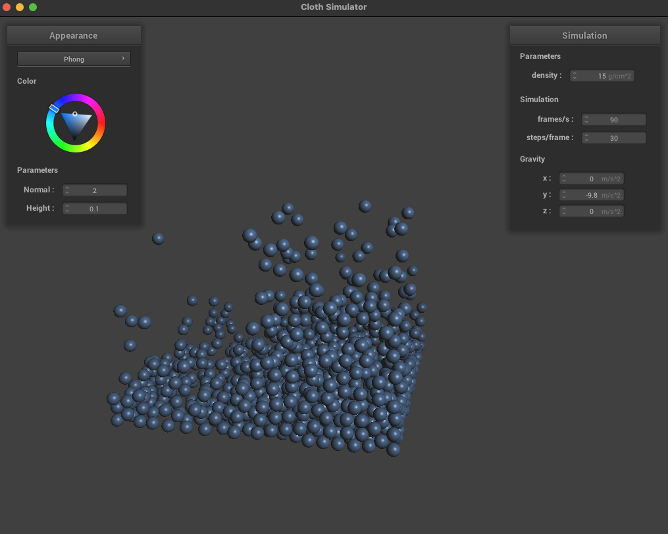
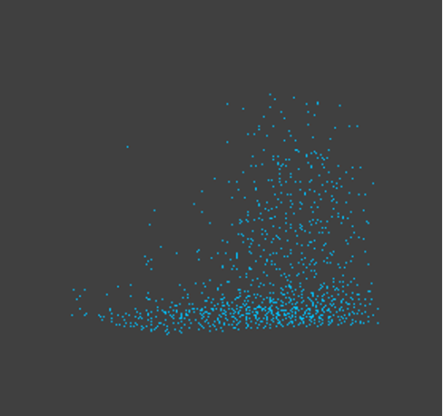

CS 184 Final Project - Fluid and collision simulation
Justin Shao, Jierui Xu, Tinna Liu, Yiwei Zhou
Milestone
We are almost done with Goal 1. The scene, basic structure, and basic simulation are done.
Current Progress
We have implemented the fluid structure and scene at the moment.
- Fluid-Structure:
- Records all of the particles and their relationships.
- We will implement more about the rendering and fluid reality simulation later in this class.
- Particles:
- Particles abstract over the point mass class.
- They behave as the base component of the fluid.
- Cube:
- The base scene contains an open box that is built up by five planes.
- As well as a cube-shaped fluid that is above the open box.
- Fluids will fall into the box and collisions happen between them due to gravity.
We have also implemented the physical simulation and constraint part of water.
- Particle based simulation
- Constant density:
- We use equations from Muller et al. (2013) to constrain particles behavior (a displacement made for each particle after numerical integration)
- Implementation:
- find_neighbors: use spatial hash map and only search through particles at neighboring hash (in total 27 of them)
- calculate_W: use Poly6 kernel function
- calculate_Ci: use SPH density estimator (sum over mass * W)
- calculate_gradient _Ci: using equation (8) from Muller
Preliminary Results
We have accomplished the following:
- Rendering of individual particles
- Interactions between particles and between particles and the container
- Simulating fluid particles dropping from the top into a cubic container under the influence of gravity
- Naive collision function implementation allows particles to stay inside the boundary of the container and prevents particles from overlapping with each other
- Using sphere rendering code to render each particle, so that they currently support Normal/Phone/Texture shading, etc.
|

|

|
Reflect on Progress Relative to Your Plan
We have accomplished our first goal of simulating fluid-like particles. We have not got the chance to give the scene a more fluid-like appearance - this may require us to build meshes on the fluid surfaces, which is an important next-step. We also recognized that particle based simulation of water requires significant amount of computing power, so we really need to carefully think about code efficiency throughout the process. find_neighbots are the most time consuming step in our simulation. We might need to try some other data structues besides spatial hash map, or improve on our current hash function to improve overall simulation efficiency.
Updated Work Plan
Up to milestone:
- Render fluid particles and their simple collision behavior
- Read paper/textbook to understand fluid particle behavior and find timestep update formulas.
- Implement incompressiblility constraint to simulate fluid behavior.
After milestone:
- Build meshes on the fluid surfaces to give the scene a more fluid-like appearance
- Implement more about the rendering and fluid reality simulation
- Improve current code efficiency by trying different data structures (KD-tree etc.), utilizing parallel computing, or restructuring code to reduce redundancy.
- Incorporate viscosity, artificial pressure, and vorticity.
Future Goals
Our future goals include:
- Implementing more complex fluid behaviors, such as surface tension, viscosity, and turbulence
- Optimizing the simulation to run faster and handle larger volumes of particles
- Adding interaction with external forces such as wind or a moving object
- Adding user interaction, such as the ability to add or remove particles or change simulation parameters
Challenges
Some challenges we anticipate include:
- Optimizing the simulation for performance, especially as the number of particles increases
- Implementing more complex fluid behaviors while maintaining simulation stability
- Dealing with collisions between particles and objects, such as the walls of the container or other objects in the scene
- Designing an intuitive and user-friendly interface for controlling and interacting with the simulation
Other resouces:
Video Link: https://youtu.be/eBj3g8jr8Dk
Slides Link: https://docs.google.com/presentation/d/1Uif1BA6uXZ3DvAOc3raSMWvWbxcGuno8llHfDAmHOLY/edit?usp=sharing